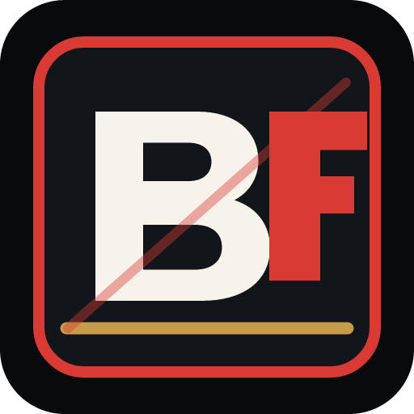
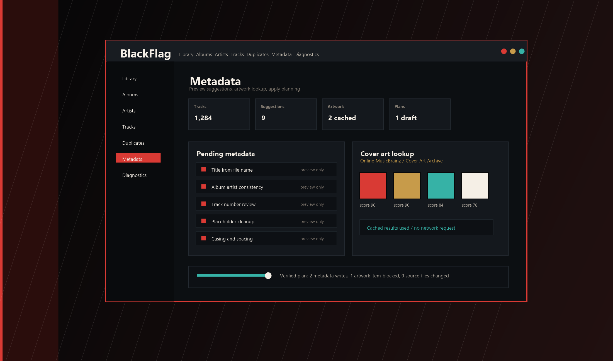

Play
Your files. Your machine.

BlackFlag Audio Private beta · 0.2.0-1Local-first music for Windows
Play it. Scan it. Clean it up. Fix the tags. Keep the files.

Your files. Your machine.
Your folders. Nothing gets rewritten.
Review duplicates. Quarantine the extras.
Tags and artwork. Preview first.
One rule
No permanent duplicate delete. No surprise metadata writes. No automatic provider calls. No rearranging your folders behind your back.